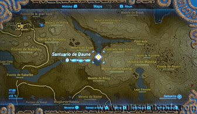
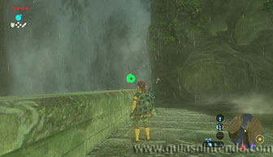
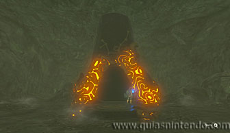
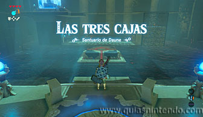
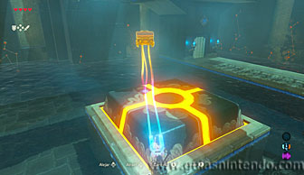
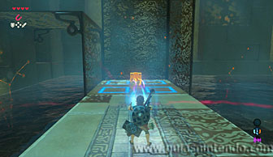
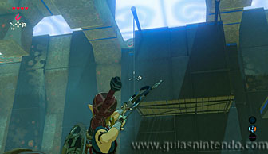
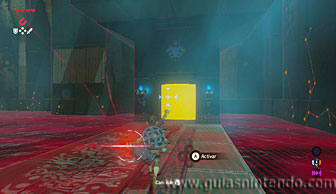
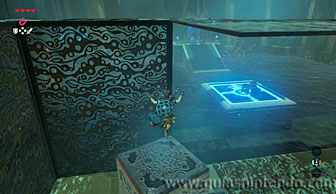
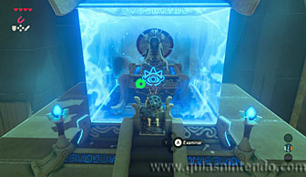

Puedes entrar en este santuario desde que llegas a la región de la torre de Necluda. Se encuentra dentro de un túnel a la derecha de la gran cascada que hay al sur de la Plaza de Lanayru.

Recorre el túnel hasta el final y llegarás a la entrada del santuario. Dentro te enfrentarás al reto de las tres cajas.

Hay un interruptor grande en el centro del santuario, el objetivo es colocar suficiente peso para activarlo. Tendrás que poner tres cofres usando el módulo del imán. Estos cofres no son difíciles de encontrar, el primero está bajo el agua y tienes otro en un suelo que se eleva y vuelve a bajar cada poco tiempo.

Para encontrar el tercero tendrás que disparar flechas a las cuerdas que sujetan una plataforma elevada de madera. Así la harás caer (el cofre se encuentra sobre ella). Después, podrás recogerlo del agua usando de nuevo el mismo módulo del imán. Los tres cofres contienen la Espada zora, ámbar y ópalo.

Cuando hayas activado el interruptor se abrirá una reja y podrás sacar un gran bloque que hay detrás (ten en cuenta que si estás tú sobre el interruptor y hay dos cofres, tu peso hará que el interruptor se active, pero se desactivará al quitarte de ella). Con este bloque en tu poder ve al suelo que sube y baja y déjalo ahí. Después sube el escalón, cuando suba el suelo, y salta encima del bloque que acabas de dejar. Así podrás alcanzar el camino que va por la parte superior.

Simplemente sigue el camino al altar. Cuando subas a él podrás examinarlo para obtener un símbolo de valía.
